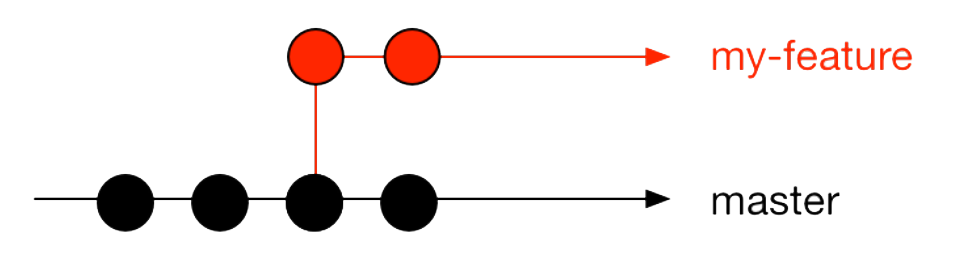

Steve Jobs
Bill Gates

Dennis Ritchie

Richard Stallman

Linus Torvalds
Bjarne Stroustrup
Guido Van Rossum
Nass Mla7
Git Started with Github
Everyday workflow
- Create a file
- Save it
- Edit it
- Save it again
- etc.
File life
Manual version control
Can we automate this?
For each document version, we need to know
- When the file was modified
- What changed
- Why it was modified
There’s more, teams
And one more question
For each document version, we need to know
- When the file was modified
- What changed
- Why it was modified
- Who did the change
The perfect tool
We want a tool that
- tracks document version
- keeps an history of document changes
- foster team work

What is Git
Git is a Version Control System that allows a team of people to work together, all using the same files.
Who Created Git ?
Setup
Linux :$ sudo apt-get install gitDownload & install git at http://git-scm.com/
Define a user name
$ git config --global user.name "Your Name”
Define an email ccount
$ git config --global user.email "your@email.com"
Check your git informations
$ git config -l
Caustom Log
$ git config --global alias.lg "log --oneline --decorate --all --graph"
Caustom Colors
$ git config --global color.ui true
Check your git informations
$ git config -l
Create a folder
$ mkdir myapp
Move to that Folder
$ cd myapp
Initialize git on that Folder
$ git init
Create a file
$ touch index.html
Status
git can tell you if your folder has some modified files (dirty)
$ git statusCommit
Snapshot of your work
How to commit ?
Add signle file
$ git add [file-name]
Add all the files
$ git add --all
Take a snapsshot (commit)
$ git commit -m "a message about this change"
Diff
if git status tells you something changed, you can inspect exactly what changed:
$ git diff
$ git diff [a_specific_file_or_folder]
Log
Show commit history with
$ git logBranching
One feature = One branch
Branch
$ git branch my-featureBranch
$ git checkout my-feature
$ git commit (x2)
In the meantime, one commit happened in the master branch

$ git checkout master
$ git commit (x2)
Merge
$ git checkout master
$ git diff master my-feature
$ git merge my-feature
Clean up
$ git branch -d my-featureLet's share our project with the world
but how to do it ?

Remote

We need a remote!
Go to GitHub, create a repo: https://github.com/new
$ git remote add origin git@github.com:[username]/[project].gitPush
Share the code with your team, and the world
$ git push origin masterPull
$ git pull origin master